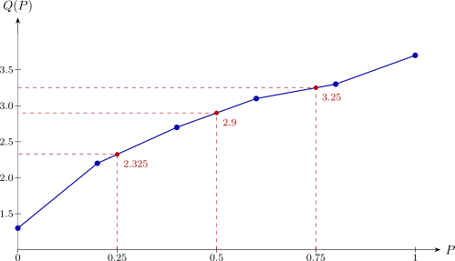

2.5 Percentile and Quartile
The \(K^{th}\) percentile of a set of values divides them so that \(K\%\) of the values lie below it and \((100-K)\%\) above. Three percentiles are used often enough to have names of their own:
- *
- \(25^{th}\) percentile \(\implies \) lower quartile, \(Q_1\).
- *
- \(50^{th}\) percentile \(\implies \) median, \(Q_2\).
- *
- \(75^{th}\) percentile \(\implies \) upper quartile, \(Q_3\).
A quartile is one of these three values; a quantile is the general object \(Q_X(P)\) for arbitrary \(P\). The two words are not interchangeable.
Sample quantiles
A sample gives no cdf to invert, so the quantile function must be estimated from the order statistics. The convention used here attaches to the \(i^{th}\) order statistic the fraction \[P_i=\dfrac {i-1}{n-1},\hspace {0.4cm}i=1,2,\dots ,n,\] so that the smallest observation sits at \(P=0\) and the largest at \(P=1\), and the remainder are spread evenly between. For the sample \[3.7,\hspace {0.3cm}2.7,\hspace {0.3cm}3.3,\hspace {0.3cm}1.3,\hspace {0.3cm}2.2,\hspace {0.3cm}3.1\] of size \(n=6\) this gives
| order statistic \(x_{(i)}\) | 1.3 | 2.2 | 2.7 | 3.1 | 3.3 | 3.7 |
| sample fraction \(P_i\) | 0 | 0.2 | 0.4 | 0.6 | 0.8 | 1 |
For a fraction \(P\) falling between two of the \(P_i\) the quantile is defined by linear interpolation. If \(P\) lies a fraction \(f\) of the way from \(P_i\) to \(P_{i+1}\), that is \(f=\left (P-P_i\right )/\left (P_{i+1}-P_i\right )\), then \[Q(P)=(1-f)\,Q\left (P_i\right )+f\,Q\left (P_{i+1}\right ).\] Geometrically this simply joins the plotted points by straight lines, as in the figure below.

Example 2.20. Find the lower quartile, median and upper quartile of the sample above.
Lower quartile. \(P=0.25\) lies between \(P_2=0.2\) and \(P_3=0.4\), with \(f=\dfrac {0.25-0.2}{0.4-0.2}=0.25\), so \[Q(0.25)=0.75\times 2.2+0.25\times 2.7=1.65+0.675=2.325 .\]
Median. \(P=0.5\) lies between \(P_3=0.4\) and \(P_4=0.6\), with \(f=0.5\), so \[Q(0.5)=0.5\times 2.7+0.5\times 3.1=2.9 ,\] which agrees with the usual rule \(\left (x_{(3)}+x_{(4)}\right )/2\) for an even sample size, as it must.
Upper quartile. \(P=0.75\) lies between \(P_4=0.6\) and \(P_5=0.8\), with \(f=\dfrac {0.75-0.6}{0.8-0.6}=0.75\), so \[Q(0.75)=0.25\times 3.1+0.75\times 3.3=0.775+2.475=3.25 .\]
Remark 2.21. Several conventions for sample quantiles are in circulation and they do not agree. The one above is the default in some software; others place \(x_{(i)}\) at \(i/(n+1)\) or at \((i-0.5)/n\). All of them agree in the limit as \(n\) grows, and all of them give the same median, but for a small sample the quartiles can differ in the first decimal place. State which convention you are using when you report a quartile.
Questions on this section
Stuck on something here? Ask below and it stays attached to this topic.